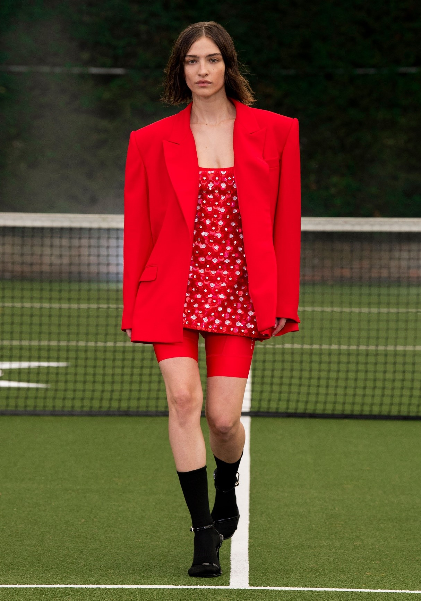
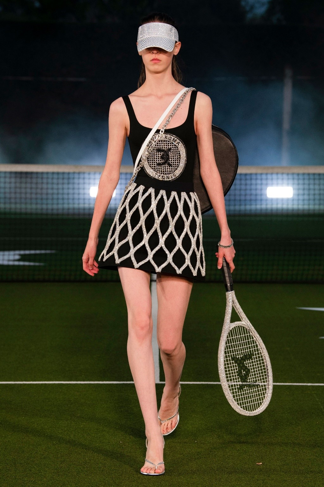
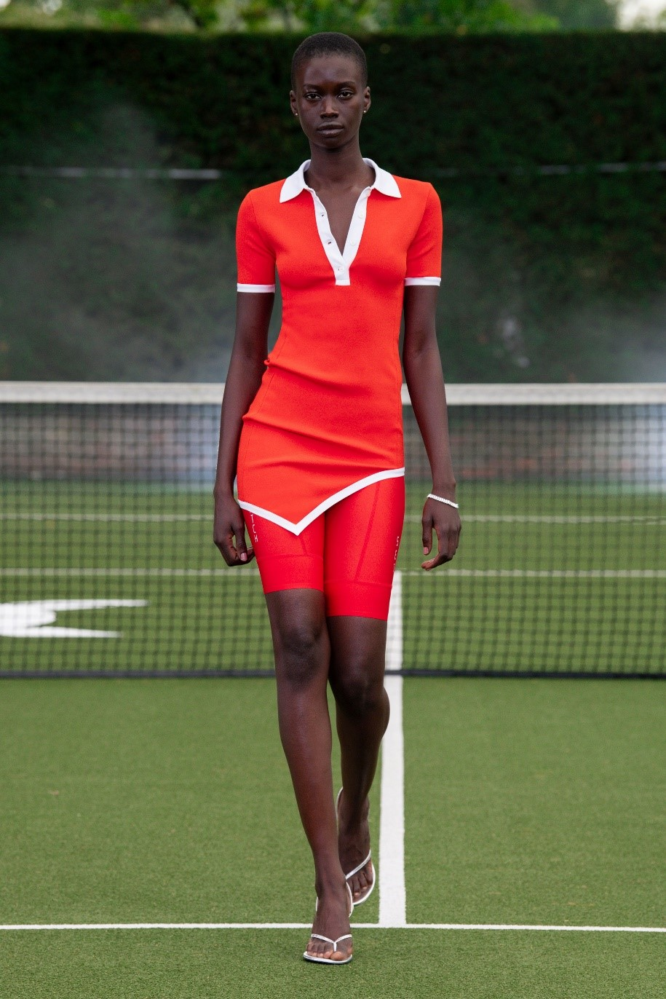
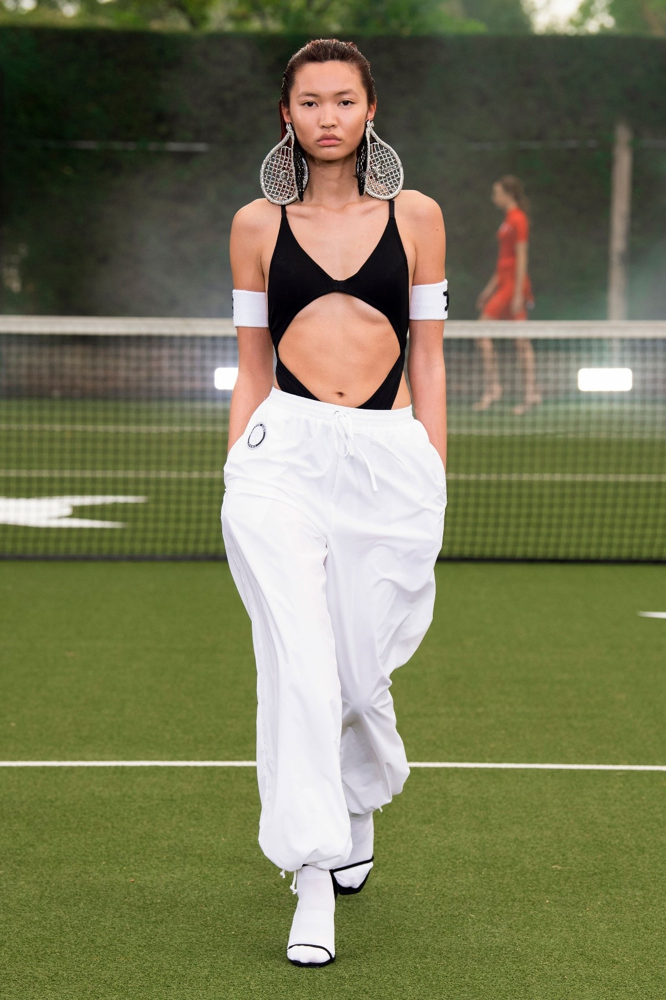
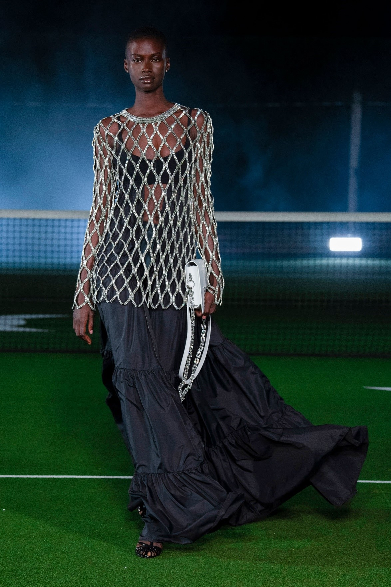

დევიდ კომა მის გულს მოდის სფეროში რომ არ გაჰყოლოდა, შესაძლოა ჩოგბურთელი ყოფილიყო. მისი სიყვარული ამ სპორტისადმი აშკარაა მაშინ, თუ გავითვალისწინებთ რამდენჯერ ჩააცვა მან ყოფილ ნომერ პირველ მსოფლიო ჩოგბურთელს - მარია შარაპოვას. რამდენჯერ? იმაზე უფრო ბევრჯერ, ვიდრე თავად დევიდს ახსოვს. კომა სპორტული ოჯახიდან მოდის. მისი ძმა პროფესიონალი ჩოგბურთელია და საკუთარი აკადემია აქვს სანტ პეტერბურგში, მამამისი სულ ცოტა, კვირაში ოთხჯერ მაინც თამაშობს. დედამისი კი ყოფილი ტანმოვარჯიშეა.„სპორტი ყოველთვის ჩემს გარშემო იყო; მამაჩემმა ჩოგბურთის რეკეტი ოთხი წლის ასაკში მომცა, “ თქვა დიზაინერმა აღმოსავლეთ ლონდონის ატელიედან მისი 2021 წლის გაზაფხულის კოლექციის ჩვენების დროს.„განსაკუთრებით ამ სეზონში, მინდოდა ისეთი რამის გაკეთება, რაც მიყვარს.“

მისმა ჩოგბურთით ღრმა დაინტერესებამ კრის ევერტამდე მიიყვანა, მოთამაშემდე, რომელსაც კორტზე, თამაშისას ბრილიანტის სამაჯური ეკეთა ხელზე. 1978 წელს აშშ-ს ღია პირველობის ადრეული რაუნდის დროს სამაჯური გაწყდა და დავარდა, ამიტომ იძულებულნი გახდნენ თამაში შეეწყვიტათ იქამდე, სანამ კრისი მას მოძებნიდა. ამრიგად შეიქმნა ტერმინი ტენისის სამაჯური.

„არასდროს ვიცოდი ეს ისტორია“ აღიარა მან,„მაგრამ თითქოს მაშინვე გამომეხმაურა“ საქმე ის კი არაა, რომ კომას ოდესმე მისი კოლექციის კრისტალებით შემკობის მიზეზი სჭირდებოდა, (მისი მბზინავი შოუები, წლების განმავლობაში, აცდუნებდა ყველას, დაწყებული ბიონსეთი დამთავრებული ჯიჯი ჰადიდითა და კენდალ ჯენერით) მაგრამ იდეა მაინც აიღო და გამოიყენა. ეს ყველაფერი გამოიხატა მის გისოსებიან სვიტრებში, ხელებზე კრისტალებიანი ნაქარგებით. ასევე სხვა მოციმციმე, ბრჭყვიალა თოკებით, რომლებიც ჩოგბურთის მინი კაბების თეთრ ჭრილში იყო განთავსებული.

ოთხმოცდაათიანი წლების კადრები, პრინცესა დი, დიდი ჩოგბურთელი, ასევე გამოჩნდა დევიდის კოლექციაში. ამით აიხსნება მისი ბრენდული პერანგები და სპორტული შორტები. იდეა, რომლითაც კიდევ ერთი ნაბიჯი გადადგა წინ, კოლექციისათვის ელვიანი Lycra მაისურების დამატება იყო. „ველოსიპედისტები მოულოდნელად აქ უხვად არიან“ - თქვა მან და აღნიშნა ველოსიპედისტების მკვეთრი მატება.

ვიდეო მან ქალაქგარეთ, კერძო სახლში გადაიღო, თავისი ჩოგბურთის კორტითა და აუდიტორიით. ერთადერთი მინუსი?„სტუმრების დაპატიჟების შეუძლებლობა“ თქვა მან Covid-19-ის ამჟამინდელი მდგომარეობის გამო. „სიამოვნებით დავდგამდი შოუს იქ და 50 ადამიანს დავპატიჟებდი ვახშამზე შოუს შემდეგ,“ თქვა მან „იქნებ, სხვა დროს...“

სტატიის ავტორი: ანანო ჩიხლაძე